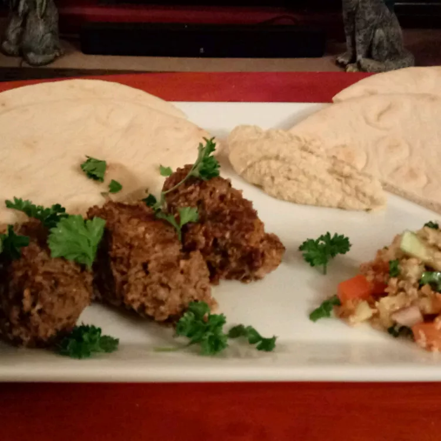

Kibbeh
Kibbeh is a wonderful dish from the Middle East traditionally made with lamb meat but beef is
acceptable,
too. I
prefer it made into patties and fried in olive oil. However, it is most often found in
restaurants
in
baked
form. Serve kibbeh with tahini, a sesame seed paste.